생산자동화기능사 (2010-10-03 기출문제)
1과목: 기계가공법 및 안전관리(대략구분)
1. 연삭숫돌 결합제에서 다이아몬드 입자와 구리, 황동 등의 분말을 분말 야금법으로 결합하는 것은 무슨 결합제에 속하나?
- 고무 결합제
- 금속 결합제
- 비트리파이드 결합제
- 실리케이트 결합제
(정답률: 71%)

2. 절삭저항 3분력이 아닌 것은?
- 표면분력
- 주분력
- 이송분력
- 배분력
(정답률: 74%)
3. 지름이 50 ㎜ 인 연강 둥근 막대를 선반에서 절삭할 때, 주축의 회전수를 100 rpm 이라하면 절삭속도는 몇 m/min인가?
- 15.7
- 20.4
- 25.3
- 29.7
(정답률: 66%)
4. 각도 측정에 사용하는 사인바의 호칭 치수는?
- 롤러의 직경
- 양쪽 롤러의 중심사이 거리
- 사인바의 폭
- 사인바의 전체 길이
(정답률: 70%)
5. 절삭유 중에서 지방질유에 해당되는 것은?
- 경유
- 스핀들유
- 기계유
- 종자유(seed oil)
(정답률: 75%)
6. 스퍼기어, 헬리컬기어, 웜기어 등을 가공하는 기어가공용 공작기계는?
- 호빙 머신
- 브로칭 머신
- 방전가공기
- 브릴링 머신
(정답률: 55%)
7. 하나의 측정기에 외경, 내경, 깊이 등을 측정 할 수 있도록 만든 측정기는?
- 다이얼 게이지
- M1형 버니어 캘리퍼스
- 다이얼 테스트 인디게이터
- 게이지 블록
(정답률: 73%)
8. 연삭에서 결합도에 따른 경도의 선정기준 중 결합도가 높은 숫돌(단단한 숫돌)을 사용해야 할 때는?(오류 신고가 접수된 문제입니다. 반드시 정답과 해설을 확인하시기 바랍니다.)
- 연삭 깊이가 클 때
- 경도가 큰 가공물을 연삭할 때
- 접촉 면적이 작을 때
- 숫돌차의 원주 속도가 빠를 때
(정답률: 42%)
9. 다음 중 액상 또는 기체상의 연료성 화재(휘발유, 벤젠 등)는 어느 화재의 분류에 속하는가?
- D급 화재
- C급 화재
- B급 화재
- A급 화재
(정답률: 72%)
10. 밀링머신에서 직접 분할법을 사용할 때 다음 중 분할이 가능한 분등은?
- 12, 8, 6, 3 등분
- 28, 16, 8, 6 등분
- 24, 16, 8, 3 등분
- 24, 14, 12, 6 등분
(정답률: 68%)
2과목: 기계제도(대략구분)
11. 암이나 리브, 림 등의 단면을 나타내기 위해 회전도시 단면도로 나타내려고 한다. 이 단면 현상을 도형 내의 절단한 곳에 겹쳐서 나타날 때는 어떤 선을 사용해야 하는가?
- 가는 실선
- 굵은 실선
- 가는 1점 쇄선
- 가는 파선
(정답률: 39%)
12. 나사 기호의 설명 중 틀린 것은?
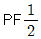
: 관용 테이퍼 나사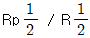
: 관용 평행 암나사와 관용 테이퍼 수나사- M50×3 : 미터 가는 나사
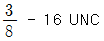
: 유니파이 보통 나사
(정답률: 60%)
13. 기어를 도시하는데 있어서 선의 사용방법으로 맞는 것은?
- 잇봉우리원은 가는 실선으로 표시한다.
- 피치원은 가는 2점 쇄선으로 표시한다.
- 이골원은 가는 1점 쇄선으로 표시한다.
- 잇줄방향은 보통 3개의 가는 실선으로 표시한다.
(정답률: 40%)
14. 가공 표면의 지시기호에서 각각에 대한 설명 중 틀린 것은?
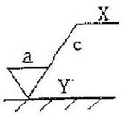
- C 는 컷오프값 · 평가 길이이다.
- Y 는 가공기계의 약호이다.
- X 는 가공방법의 약호이다.
- a 는 표면거칠기의 지시값이다.
(정답률: 64%)
15. 그림의 도면은 드릴 지그의 조립도이다. 드릴이 안내되는 구멍부분 품번② 의 명칭으로 가장 적합한 것은?
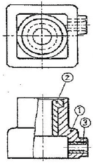
- 부시(Bush)
- 레버(Lever)
- 축(Shaft)
- 캡(Cap)
(정답률: 60%)
16. 도면에 굵은 1점 쇄선으로 표시되어 있을 경우 다음 중 어느 경우에 해당되는가?
- 기어의 피치선이다.
- 인접부분을 참고로 표시하는 선이다.
- 특수 가공을 지시하는 선이다.
- 이동 위치를 표시하는 선이다.
(정답률: 72%)
17. 그림과 같은 입체도에서 화살표방향이 정면일 경우 제3각법으로 투상한 도면으로 가장 적합한 것은?
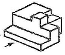
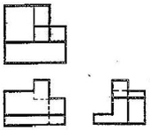
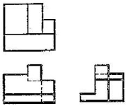
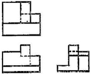
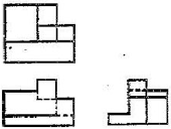
(정답률: 78%)
18. 기하 공차를 적용할 때, 단독형체에 적용하는 공차는?
- 원통도 공차
- 위치도 공차
- 동심도 공차
- 평행도 공차
(정답률: 56%)
19. 기하공차의 표시 방법 중 원통 도 공차를 표시한 것은?
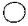
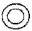
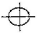
(정답률: 69%)
20. 합금 공구강 강재에 해당하는 재료 기호는?
- SS.330
- SHP 1
- STS 31
- SCM 415
(정답률: 69%)
21. 다음 중 기계적 에너지를 유압 에너지로 바꾸는 유압기기는?
- 공기 압축기
- 유압 펌프
- 오일 탱크
- 유압제어 밸브
(정답률: 84%)
22. 파스칼의 원리를 올바르게 설명한 것은?
- 정지 유체내에 가해진 압력은 깊이에 비례하여 전달된다.
- 정지 유체내에 가해진 압력은 깊이에 반비례하여 전달된다.
- 정지 유체내에 가해진 압력은 길이의 제곱에 비례 전달된다.
- 밀폐된 용기내에 가해진 압력은 모든 방향으로 균등하게 전달된다.
(정답률: 65%)
23. 압력의 표시단위가 아닌 것은?
- Pa
- bar
- atm
- N・m
(정답률: 77%)
24. 공압 실린더의 공기를 급속히 방출시켜서 실린더의 속도를 증가시키고자 할 때 사용되는 밸브는?
- 속도제어 밸브
- 급속배기 밸브
- 스로틀 밸브
- 스톱 밸브
(정답률: 80%)
25. 공기 압축기의 선정시 고려되어야 할 사항을 설명한 것으로 틀린 것은?
- 압축기의 송출압력과 이론 공기공급량을 정하여 산정한다.
- 소용량의 압축기를 병렬로 여러 대 설치하는 것이 대용량 1대보다 효율적이다.
- 사용 공기량의 수요 증가 또는 공기 누설을 고려하여 1.5~2배 정도 여유를 둔다.
- 대용량 압축기 1대로 집중공급 시 불시의 고장으로 작업 중단을 예방하기 위해 2대 설치하는 것이 좋다.
(정답률: 68%)
26. 축압기(어큐뮬레이터)의 용도로 적합하지 않은 것은?
- 에너지 축척용
- 펌프 맥동 흡수용
- 충격압력의 완충용
- 유체 분배용
(정답률: 67%)
27. 유압장치의 기본적인 구성요소가 아닌 것은?
- 유압 펌프
- 에어 컴프레셔
- 유압제어 밸브
- 오일 탱크
(정답률: 82%)
28. 유량을 제어하는 교축 밸브 중 유압구동에서 가장 많이 사용되고 있는 밸브로써, 기름의 흐름 방향에 관계없이 두 방향의 흐름을 항상 제어하는 밸브는?
- 스톱 밸브
- 스로틀 밸브
- 스로틀 체크 밸브
- 서보유압 밸브
(정답률: 56%)
29. 다음 보기는 공압 액추에이터 중에서 무엇에 대한 설명인가?
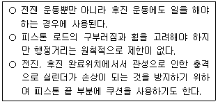
- 복동 실린더
- 단동 실린더
- 베인형 공압 모터
- 격판 실린더
(정답률: 80%)
30. 일반적으로 공압 액추에이터나 공압 기기의 작동압력(kgf/cm2) 으로 가장 알맞은 압력은?
- 1~2
- 4~6
- 10~15
- 40~55
(정답률: 74%)
3과목: 메카트로닉스 일반(대략구분)
31. 스트레인 게이지와 로드 셀은 무슨 종류의 센서와 관계가 있는가?
- 온도센서
- 자기센서
- 압력센서
- 관센서
(정답률: 60%)
32. 공장 자동화의 단계에서 가장 발전된 단계는?
- CAD
- CAM
- DNC
- CIM
(정답률: 66%)
33. 물체가 방사하고 있는 각종 적외선을 검출하는 비접촉식 센서로 최근에는 TV나 VTR 등 가전제품의 리모컨, 자동문의 스위치, 방사온도계 등에 사용되고 있는 것은?
- 자기 센서
- 초음파 센서
- 적외선 센서
- 열전대
(정답률: 82%)
34. PLC의 제어기능과 관계없는 것은?
- 노이즈 방지 기능
- 시퀀스 처리 기능
- 자기진단 기능
- 연산 처리 기능
(정답률: 72%)
35. 유연생산시스템(FMS)의 특징이라 볼 수 없는 것은?
- 단일 제품을 대량으로 생산하는 방식이다.
- 제품의 수명이 짧아지고 고객의 요구가 다양해짐에 따라 이에 적절히 대처할 수 있다.
- 다양한 제품을 동시에 처리하므로 수요의 변화에 유연하게 대처할 수가 있다.
- FMS의 형태는 생산되는 대상 제품의 종류와 양에 따라 다양한 형태가 있다.
(정답률: 66%)
36. 감지기, 측정 장치 등과 같이 제어대상으로부터 나오는 출력을 측정하여 기분입력과 비교할 수 있게 하여 주는 것은?
- 제어 요소
- 동작 신호
- 제어 대상
- 되먹임 요소
(정답률: 74%)
37. 다음 회로의 명칭은?
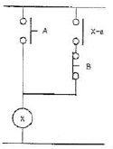
- 기동우선 회로
- AND 회로
- 인터록 회로
- 정지우선 회로
(정답률: 58%)
38. CAD 시스템은 컴퓨터에 의한 도형묘사를 설계자와 컴퓨터간 대화를 통해 수행하는 대화형 컴퓨터그래픽에 기초를 둔 시스템인데, 이를 이용하여 설계의 자동화를 시행하는 이유가 아닌 것은?
- 설계자의 생산성 증가
- 설계의 품질향상
- 정확한 도면의 작도
- 공정 중 재고량의 감축
(정답률: 75%)
39. 자동화의 목적과 가장 거리가 먼 것은?
- 생산성 향상된다.
- 제품 품질의 균일화되어 불량품이 감소한다.
- 적정한 작업 유지를 위한 원자재, 연료 등이 증가한다.
- 신뢰성이 높고 고속 동작이 가능하다.
(정답률: 88%)
40. 릴레이제어와 비교한 PLC제어의 장점 중 틀린 것은?
- 동작 실행에 대한 내용 변경이 용이하다.
- 프로그램 된 내용을 확인할 수 없다.
- 제어기능 량에 비해 설치 면적이 적다.
- 신뢰성이 높고 고속 동작이 가능하다.
(정답률: 81%)
41. PLC의 입력기기로 가장 적합한 것은?
- 표시등
- 전자개폐기
- 리밋스위치
- 솔레노이드밸브
(정답률: 71%)
42. 되먹임 제어의 효과라고 볼 수 없는 것은?
- 외부 조건의 변화에 대한 영향을 줄일 수 있다.
- 정확도가 증가한다.
- 대역폭이 증가한다.
- 시스템이 작아지고 값이 싸진다.
(정답률: 76%)
43. 무인 반송차의 유도방식 중 경로에 매설한 유도선의 자계를 검출하여 경로를 인식하는 방식은?
- 전자유도방식
- 광학방식
- 자이로방식
- 마크추적방식
(정답률: 75%)
44. 정전용량형 감지기의 검출거리에 영향을 미치는 요소가 아닌 것은?
- 검출제의 두께
- 검출제의 색깔
- 검출제의 유전율
- 검출체의 크기
(정답률: 84%)
45. 푸시버튼 스위치 a 접점 기호인 것은?
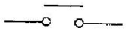
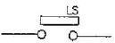
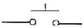
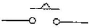
(정답률: 76%)
46. 전자개폐기의 철심이 진동할 경우 예상되는 원인으로 가장 가까운 것은?
- 가동 철심과 고정 철심 접촉부위에 녹이 발생했다.
- 전자개폐기의 코일이 단선 되었다.
- 전자개폐기 주위의 습기가 낮다.
- 접촉단자에 정격전압 이상의 전압이 가해졌다.
(정답률: 68%)
47. 다음 중 NAND 소자를 나타내는 논리 소자는?
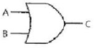
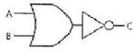
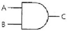
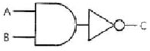
(정답률: 81%)
48. 2개 이상의 회로에서 한 개의 회로만 동작을 시키고, 나머지 회로는 동작이 될 수 없도록 해주는 회로는?
- 자기유지 회로
- 순차동작 회로
- 인터로크 회로
- 시한동작 회로
(정답률: 81%)
49. 다음 카르노프맵의 간략식으로 맞는 것은?
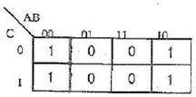
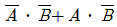
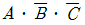
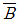
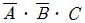
(정답률: 52%)
50. Flip-Flop 의 종류에 속하지 않는 것은?
- RS Flip-Flop
- T Flip-Flop
- D Flip-Flop
- K Flip-Flop
(정답률: 75%)
51. 그림과 같은 유접점 시퀀스 회로도에 대한 설명으로 적합한 것은?
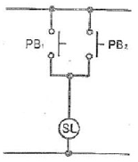
- 입력과 PB1과 PB2는 직렬 연결이다.
- 입력과 PB1과 PB2는 병렬 연결이다.
- 입력과 PB1과 PB2는 NAND 관계이다.
- 입력과 PB1과 PB2는 AND 관계이다.
(정답률: 76%)
52. 논리 회로를 간략화 하는데 있어서 0과 1을 연산하고 할 때 틀린 것은?
- 0 + 0 = 0
- 1 + 0 = 1
- 1 · 1 = 1
- 1 · 0 = 1
(정답률: 83%)
53. 그림과 같은 무접점 시퀀스의 출력(Y)의 값으로 알맞은 것은?
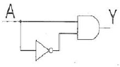
- A'
- A
- 0
- 1
(정답률: 63%)
54. 검출 스위치의 종류가 아닌 것은?
- 리밋 스위치
- 근접 스위치
- 온도 스위치
- 전자 계전기
(정답률: 66%)
55. 다음 그림의 시퀀스 제어도에서 R2가 여자 되기 위한 접점에 해당 되는 것은?
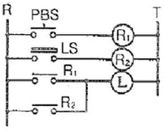
- PBS
- LS
- R1
- R2
(정답률: 75%)
56. 반도체 논리소자를 사용한 무접점식 시퀀스 제어를 명령처리에 따라 분류할 때 해당하지 않는 것은?
- 조건제어
- 순서제어
- 시한제어
- 직선제어
(정답률: 55%)
57. 시퀀스 제어에서 사용하는 문자 기호와 그 해당 용어로 틀린 것은?
- OPM : 조작용 전동기
- COS : 전환 스위치
- LVS : 리밋 스위치
- CTR : 제어기
(정답률: 69%)
58. 미리 정해진 순서, 또는 일정한 논리에 의해 정해진 순서에 따라 제어의 각 단계를 순차적으로 진행하는 제어는?
- 매뉴얼제어
- 프로그램제어
- 프로세스제어
- 시퀀스제어
(정답률: 87%)
59. 다음 중 부하의 이상에 의한 정상전류의 증가를 검출하고 회로를 차단하는 과부하 보호 장치의 대표적인 것은?
- thermal relay
- electromagnetic contractor
- timer
- counter
(정답률: 52%)
60. 문제 복원중입니다. 문제 내용 및 보기 내용을 아시는 분들께서는 오류 신고를 통하여 작성 부탁 드립니다. 정답은 4번 입니다.
- 복원중
- 복원중
- 복원중
- 복원중
(정답률: 80%)